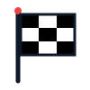
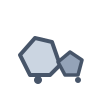
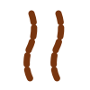
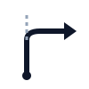
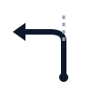
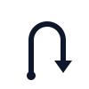

Ecosistema Frediani Roadbook Digital — Base vectorial unificada para Android y Plataforma Web
tc_clockstart_flag
finish_flagstop_signreset_0000speed_dzspeed_fzfuel_surtidorassistance_wrenchmedical_crosswp_visibledanger_1danger_2danger_3warning_triangletranqueraguardaganadopuentealcantarillavias_trenantenamolinocasa_pobladoiglesiavado_riosalto_lomozanjadunas
piedras
barro_huellasrectacurva_dercurva_izq
der_90
izq_90
horquilla_derhorquilla_izqcruce_xbifurcacion_yrotonda